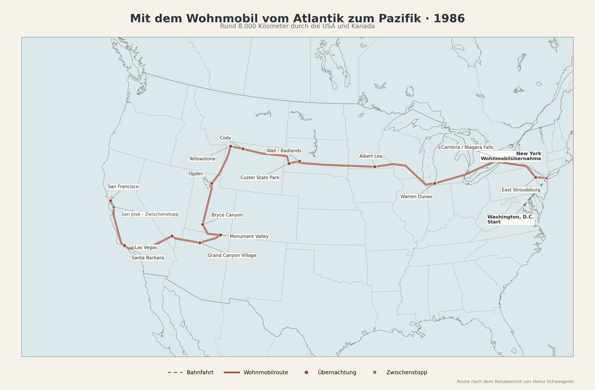

Die Idee, einmal quer durch die Vereinigten Staaten zu fahren, hatte mich schon lange beschäftigt. Als meine Eltern uns im Sommer 1985 in San Francisco besuchten, wurde daraus ein konkreter Plan. Wir wollten die Reise im folgenden Jahr zu viert unternehmen: Hilde und ich gemeinsam mit meinen Eltern. Mein Vater bereitete sich gründlich darauf vor. Er besorgte Karten, Streckenbeschreibungen und Campingplatzverzeichnisse, plante die Etappen und hielt die Reise später in einem ausführlichen Bericht fest. Dieser Bericht ist die Grundlage für die folgende Geschichte.
Für drei Wochen mieteten wir ein Wohnmobil. Es war siebeneinhalb Meter lang, hatte einen Achtzylindermotor, sechs Schlafplätze, Küche, Dusche und Toilette sowie Tanks für Frisch- und Abwasser. Dazu kamen Heizung, Klimaanlage und ein eigener Generator. Kurz gesagt: alles, was man brauchte, um ein solches Land einigermaßen unabhängig zu durchqueren. Am Ende lagen rund 8.000 Kilometer zwischen New York und San Francisco.

Von Washington zu den Niagarafällen
Ausgangspunkt war Washington, wo meine Schwester Marlene mit ihrem Mann Dabney lebte. Von dort fuhren wir mit dem Zug nach New York. Die Fahrt führte über zahlreiche Wasserarme, an Philadelphia und seinen rußgeschwärzten Industrieanlagen vorbei. In New York übernahmen wir das Wohnmobil. Die angekündigte deutschsprachige Einweisung fiel aus, weil der zuständige Mitarbeiter nicht erschienen war. Das war kein größeres Problem. Schwieriger war schon, sich durch den Stapel aus Gebrauchsanweisungen, Karten und Vertragspapieren zu arbeiten und anschließend ein Fahrzeug dieser Größe aus dem Großraum New York herauszubewegen.
Die erste kurze Etappe führte nach East Stroudsburg in Pennsylvania. Am nächsten Morgen lernten wir die regelmäßigen Pflichten eines Wohnmobilreisenden kennen: Abwasser ablassen, Frischwasser auffüllen und die Toilette entsorgen. In Amerika war alles genormt und funktionierte erstaunlich unkompliziert. Dann ging es über Scranton, Binghamton und Buffalo nach Cambria in der Nähe der Niagarafälle. Am Abend grillten wir Hähnchenschenkel und tranken dazu kalifornischen Wein. Lediglich die Schnaken hatten offenbar beschlossen, ebenfalls an diesem Abendessen teilzunehmen.
Die Niagarafälle waren unser erstes großes Naturerlebnis. Wir sahen sie von der amerikanischen und der kanadischen Seite und gingen über die Regenbogenbrücke von einem Land ins andere. Die amerikanische Stadt Niagara Falls wirkte industriell und wenig einladend, die kanadische Seite dagegen gepflegt und ganz auf Besucher eingestellt. Überall donnerte und sprühte das Wasser. Danach fuhren wir durch Ontario, vorbei an Orten mit Namen wie London, Paris und Dresden, und über Detroit zurück in die Vereinigten Staaten. Nach mehr als 800 Kilometern erreichten wir den Warren Dunes State Park am Michigansee.
Durch den Mittleren Westen
Chicago umfuhren wir weiträumig. Trotzdem waren wir mehr als drei Stunden unterwegs und sahen den Sears Tower nur aus der Ferne. Hinter der Stadt begann Wisconsin mit Getreidefeldern, Wäldern, Seen und weißen Zäunen. In Wisconsin Dells machten wir einen kurzen Halt zwischen nachgebauter Pionierromantik, Totempfahl und dem üblichen touristischen Schnickschnack. Bei La Crosse überquerten wir den Mississippi. Dort war er mehrere Kilometer breit, in zahlreiche Arme geteilt und von bewaldeten Inseln durchzogen.
In Albert Lea übernachteten wir auf einem ausgezeichnet ausgestatteten Campingplatz. Am nächsten Morgen saß Hilde am Steuer. Die Highways zogen sich schnurgerade durch die Ebenen von Minnesota und South Dakota. Trucker überholten uns, obwohl offiziell überall 55 Meilen pro Stunde galten. Für sie war Zeit Geld, für uns war die Geschwindigkeitsbegrenzung eher eine Übung in Geduld. Die Landschaft wurde leerer, die Entfernungen größer. Viehherden standen weit verstreut auf den Weiden, und kleine Ansiedlungen tauchten nur gelegentlich am Horizont auf.
In den Badlands änderte sich das Bild vollständig. Aus der Prärie erhoben sich zerfurchte Felsen, Kegel und scharfkantige Grate. Am Mount Rushmore standen die in den Granit gesprengten Köpfe der vier Präsidenten über uns. Mein Vater hielt die technischen Einzelheiten dieses gewaltigen Unternehmens gewissenhaft fest. Uns beeindruckte vor allem die Größe des Monuments und der Aufwand, mit dem Amerika seine Geschichte in einen Berg meißelte. Die Nacht verbrachten wir im Custer State Park.
Über den Bighorn National Forest fuhren wir weiter nach Cody. Auf einem Hochplateau fanden wir einen riesigen Blumenteppich, der ebenso gut auf einer Alm in Südtirol hätte liegen können. Danach öffnete sich das Bighorn Valley, und in der Ferne erschienen erstmals die schneebedeckten Gipfel der Rocky Mountains. Am Abend gab es den inzwischen obligatorischen Erfrischungsdrink: Whiskey mit Seven Up, natürlich eisgekühlt.
Yellowstone und die Rocky Mountains
Cody lebte vom Andenken an Buffalo Bill. Es gab ein Museum, ein Freilichtdorf, alte Planwagen und eine Kneipe mit Einschusslöchern in der Tür. Danach führte die Straße durch das Wapiti Valley und über den 2.600 Meter hohen Sylvan Pass in den Yellowstone-Nationalpark. Der Park war erst seit wenigen Tagen geöffnet. In den Wäldern lag noch Schnee, obwohl wir in der Nacht zuvor bei geöffneten Fenstern geschlafen hatten.
Yellowstone war eine eigene Welt. Es dampfte, zischte, brodelte und roch an vielen Stellen nach faulen Eiern. Old Faithful schoss beinahe pünktlich seine Wasserfontäne in die Höhe. Es gab farbige Thermalquellen, Schlammvulkane und die weißen, gelben und braunen Terrassen der Mammoth Hot Springs. Im Hayden Valley standen Büffel im hohen Gras. Einer überquerte mit großer Gelassenheit unmittelbar vor unserem Wohnmobil die Straße. Bären sahen wir nicht, obwohl wir aufmerksam Ausschau hielten. Nachts ließen wir vorsichtshalber keine Lebensmittel draußen liegen.
Am Yellowstone Lake fanden wir einen einfachen Stellplatz im Wald. Einen Stromanschluss gab es nicht, und der Generator durfte wegen der Nachtruhe nicht laufen. Wir sammelten Holz und saßen am Lagerfeuer. In dieser Nacht brauchten wir warme Decken. Am folgenden Tag sahen wir die Wasserfälle des Yellowstone River, bevor wir den Park verließen. Mein Vater schrieb später, man gelange leicht hinein, verlasse ihn aber schweren Herzens. So empfanden wir es tatsächlich.
Südlich von Yellowstone begann fast ohne Übergang der Grand-Teton-Nationalpark. Die schneebedeckte Gebirgskette stieg aus dem flachen Tal auf, als hätte sie jemand dort abgestellt. Über Jackson, zwei Gebirgspässe und den Bear Lake kamen wir nach Utah. In Ogden besichtigten wir den Tempelbezirk der Mormonen. Anschließend ging es am Großen Salzsee vorbei und wieder hinaus in eine weite, trockene Landschaft.
Bryce Canyon und Monument Valley
Auf dem Weg zum Bryce Canyon gerieten wir zunächst in einen Sandsturm, dann in einen Wolkenbruch und schließlich in Hagel. Wenige Kilometer später rissen die Wolken auf. Vor uns lag der Bryce Canyon in der Nachmittagssonne. Seine Türme, Nadeln und Säulen wechselten je nach Lichteinfall die Farbe. Wir blieben einen zusätzlichen Tag und fuhren am frühen Morgen noch einmal zu den Aussichtspunkten. Mein Vater fotografierte ausgiebig. Der Canyon war weniger eine Schlucht als eine aus dem Gestein herausgewitterte Stadt.
Über Kanab und Page erreichten wir den Lake Powell und anschließend das Gebiet der Navajo. Unser Campingplatz lag zwischen roten Felsen, die Türme des Monument Valley standen als dunkle Silhouetten am Horizont. Am nächsten Morgen stellte mein Vater fest, dass der Film in seiner Kamera seit Yellowstone nicht weitertransportiert worden war. Mehr als vierzig vermeintliche Aufnahmen existierten nicht. Wenigstens hatte ich ebenfalls fotografiert und konnte später einige Dias beisteuern.
Das Monument Valley kannten wir aus unzähligen Westernfilmen. In Wirklichkeit wirkte es noch unwirklicher. Aus der flachen roten Ebene ragten einzelne Felsburgen und Türme mehrere hundert Meter empor. Die unbefestigte Rundstraße war trocken und entsprechend staubig. Danach machten wir einen ungeplanten Abstecher zum Navajo National Monument Betatakin. In einer gewaltigen Felsnische lagen die Reste eines Dorfes aus dem 13. Jahrhundert. Wir betrachteten es von der anderen Seite der Schlucht. Für den Abstieg war es zu heiß und unsere Zeit zu knapp.
Grand Canyon und Las Vegas
Dem Grand Canyon näherten wir uns durch einen Wald. Lange war nichts von ihm zu sehen. Erst vom Parkplatz am Mather Point gingen wir wenige Minuten zu Fuß und standen plötzlich am Rand eines 1.600 Meter tiefen Abgrunds. Mein Vater beschrieb, dass einem dort die Worte fehlten. Unten war der Colorado River nur als schmaler grünlicher Streifen zu erkennen. Die Felsen wechselten je nach Licht zwischen Rot, Gold, Rosa und Violett. Am nächsten Tag fuhren wir mit einem Bus zu weiteren Aussichtspunkten am Südrand. Für einen Abstieg blieb keine Zeit, und wahrscheinlich war das auch vernünftig.
Danach kam Las Vegas. Nach den stillen Landschaften der Nationalparks war die Stadt ein ziemlicher Gegensatz. In der Nacht bestand sie aus Licht, Klimaanlagen, Spielautomaten und Menschen, die offenbar keine Uhr brauchten. Wir sahen im Stardust die Revue „Lido de Paris“. Als wir nach der Vorstellung aus dem gekühlten Saal kamen, empfing uns mitten in der Nacht ein heißer Wüstenwind. Am folgenden Tag machten wir Pause. Mein Vater fotografierte den Strip bei Tageslicht und entdeckte dabei einen Elefanten, der seinem Wärter entwischt war und nun auf dem Boulevard für eine zusätzliche, ungeplante Show sorgte.
Las Vegas war erstaunlich billig, solange man nicht spielte. Die Hotels und Restaurants lebten davon, dass die Gäste ihr Geld an anderer Stelle ablieferten. Wir sahen noch eine zweite Show und verließen die Stadt am 1. Juli. Wenige Minuten hinter den letzten Hotels begann wieder die Mojave-Wüste. Am Horizont erschienen Wasserflächen, die sich beim Näherkommen als Luftspiegelungen erwiesen. In Calico besichtigten wir eine ehemalige Silberminenstadt, die nach ihrem Verfall für Touristen wieder hergerichtet worden war. Auch eine Geisterstadt musste in Amerika offenbar wirtschaftlich arbeiten.
Zurück nach San Francisco
Über Barstow, Palmdale und Santa Paula kamen wir schließlich an den Pazifik. Nach den langen Tagen in Prärie, Gebirge und Wüste war der erste Blick auf das Meer ein besonderer Moment. In Ventura erreichten wir den Highway 1 und fuhren nach Santa Barbara. Dort übernachteten wir auf einem kleineren Campingplatz unter Palmen. Die Stadt mit ihren spanisch-mexikanischen Gebäuden, Innenhöfen und der alten Missionskirche war wieder eine völlig andere Welt.
Die letzte Etappe führte über den San Marcos Pass, Solvang und das kalifornische Farmland nach Norden. In Solvang standen dänische Häuser und Windmühlen, als hätte man ein Stück Dänemark nach Kalifornien versetzt. Weiter nördlich wechselten Blumenfelder, Salat- und Artischockenfelder mit großen Viehhaltungen. Mein Vater nannte die dort wartenden Rinder „Steak-Aspiranten“. Monterey ließen wir aus, weil wir die Halbinsel bereits kannten. Auch an Gilroy mit seinem Knoblauchfestival fuhren wir vorbei.
In San José machten wir bei Ulli und Derek einen letzten Halt. Es gab Grillhähnchen und Zinfandel, während wir von unserer Reise erzählten. Erst gegen elf Uhr abends erreichten wir unser Haus in der 39th Avenue in San Francisco. Am nächsten Tag räumten wir das Wohnmobil aus, reinigten es und brachten es zur Vermietstation nach San Rafael zurück. Die Übergabe verlief ohne die befürchtete pingelige Kontrolle.
Drei Wochen lang war dieses Wohnmobil unser Zuhause gewesen. Es hatte uns über mehr als 8.000 Kilometer von einem Ozean zum anderen gebracht. Wir hatten die Uhren viermal umgestellt, waren durch Kanada und zahlreiche amerikanische Bundesstaaten gefahren und hatten Prärien, Wüsten, Gebirge und einige der großen Naturwunder Nordamerikas gesehen. Für meinen Vater war die Reise damit noch nicht beendet. Er verbrachte die folgenden Tage damit, auch San Francisco genau zu beschreiben. Für uns dagegen war es die Rückkehr in einen inzwischen vertrauten Alltag. Nach drei Wochen auf der Straße kam selbst der Nebel im Sunset District beinahe heimisch vor.